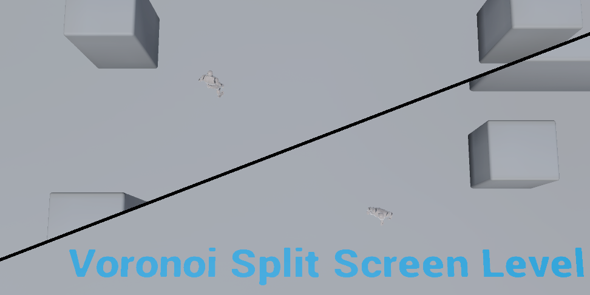

A voronoi diagram is one where nodes (characters in this screenshot) are separated into spaces that are divided by a line, where every point on the line is an equal distance from both nodes.
For this tutorial, we are only looking at diagrams of two nodes and therefore one line.
This voronoi split screen system moves the line so that it is always between the two players, which gives them a constant understanding of where they are in relation to each other, and it merges the screen into one when they are within a certain distance of each other.
First, we want to translate the players' positions to the node positions.

Where 'x' is the distance from the 'M' midpoint between the two characters, to one of the players. And 'y' is the distance from the center of the screen to the node.
We will keep the angle the same, and so we'll only deal with distance. We need to keep the node on the screen, so we need to translate a distance (which could go to infinite) to a finite range, and we want to get there gradually. The following function should do the job:

We can dial 'a' up and down to change the curve amount, and this will get us to the perfect range, 0 to 1. That range is perfect because we can simply multiply 'y' by a constant, and now our function goes from 0 to that constant. So we can dial 'a' to be the max distance we want our nodes to be from the center of the screen, and our nodes will gradually get further apart as the players move apart, but well never go off the screen.
With this, we have translated the two players' positions from player-space to node-space.
basic
Two player voronoi split screen is working!@UnrealEngine #UE4 #indiedev #gamedev pic.twitter.com/LuN0ThUVVJ
— Matt Woelk (@MattWoelk) July 12, 2016
basic with line
Variable-width dividing line for the voronoi split-screen.@UnrealEngine #UE4 #gamedev
— Matt Woelk (@MattWoelk) July 21, 2016
An information-packed line :) pic.twitter.com/JgDcpMvBHl
sticky 100%
Let's go explore!#screenshotsaturday #UE4 #gamedev pic.twitter.com/8r6txxJU1D
— Matt Woelk (@MattWoelk) September 3, 2016
smooth 100%
You can always find your way back to me. pic.twitter.com/6ZlhnFSnLB
— Matt Woelk (@MattWoelk) September 8, 2016
line damping graph
@MattWoelk Added a damping parameter to line thickness so that it grows more gradually. pic.twitter.com/czikFulxf0
— Matt Woelk (@MattWoelk) September 8, 2016
This automatic page generator is the easiest way to create beautiful pages for all of your projects. Author your page content here using GitHub Flavored Markdown, select a template crafted by a designer, and publish. After your page is generated, you can check out the new gh-pages branch locally. If you’re using GitHub Desktop, simply sync your repository and you’ll see the new branch.
Designer Templates
We’ve crafted some handsome templates for you to use. Go ahead and click 'Continue to layouts' to browse through them. You can easily go back to edit your page before publishing. After publishing your page, you can revisit the page generator and switch to another theme. Your Page content will be preserved.
Creating pages manually
If you prefer to not use the automatic generator, push a branch named gh-pages to your repository to create a page manually. In addition to supporting regular HTML content, GitHub Pages support Jekyll, a simple, blog aware static site generator. Jekyll makes it easy to create site-wide headers and footers without having to copy them across every page. It also offers intelligent blog support and other advanced templating features.
Authors and Contributors
You can @mention a GitHub username to generate a link to their profile. The resulting <a> element will link to the contributor’s GitHub Profile. For example: In 2007, Chris Wanstrath (@defunkt), PJ Hyett (@pjhyett), and Tom Preston-Werner (@mojombo) founded GitHub.
Support or Contact
Having trouble with Pages? Check out our documentation or contact support and we’ll help you sort it out.